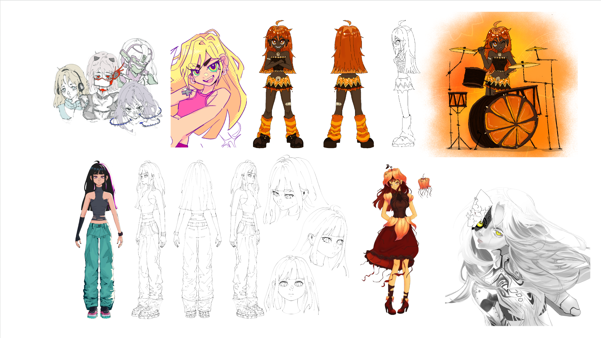
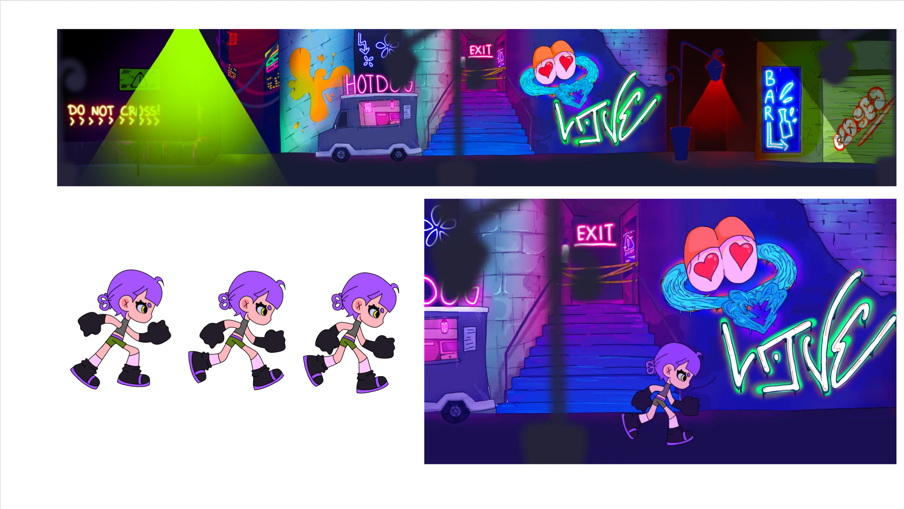
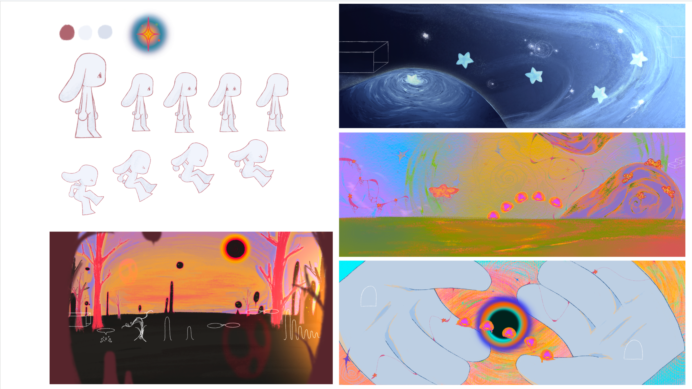
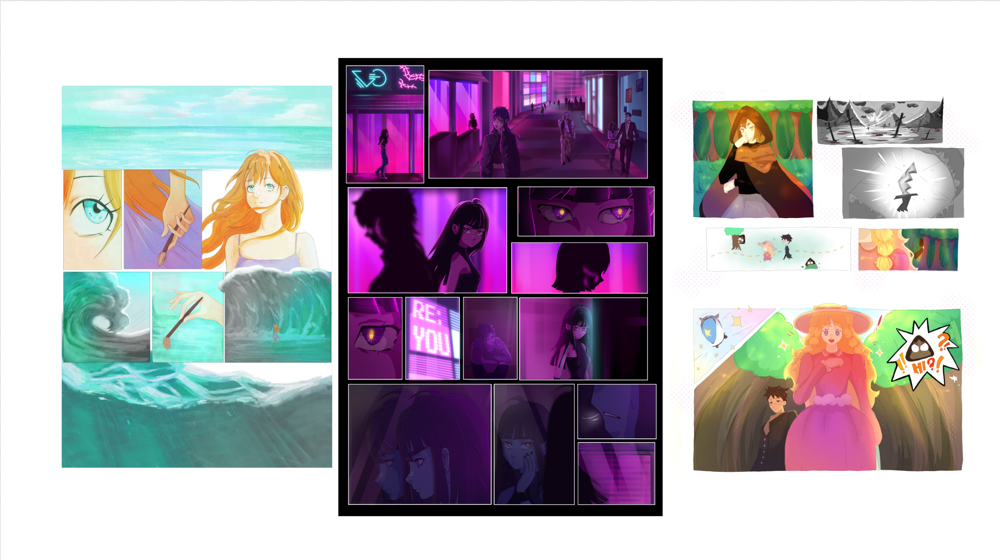
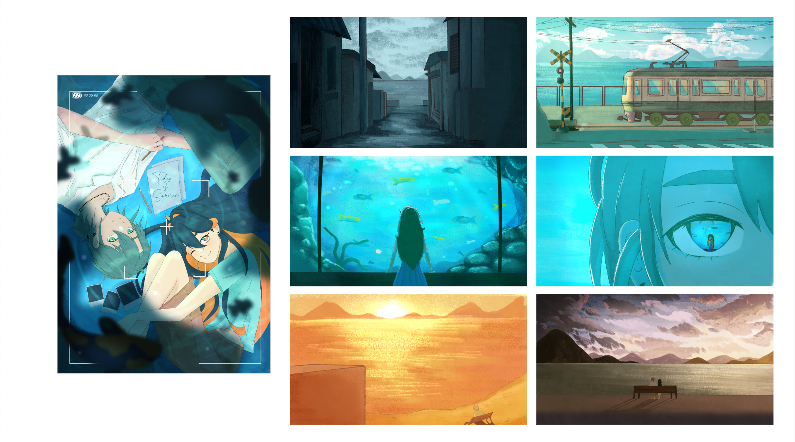
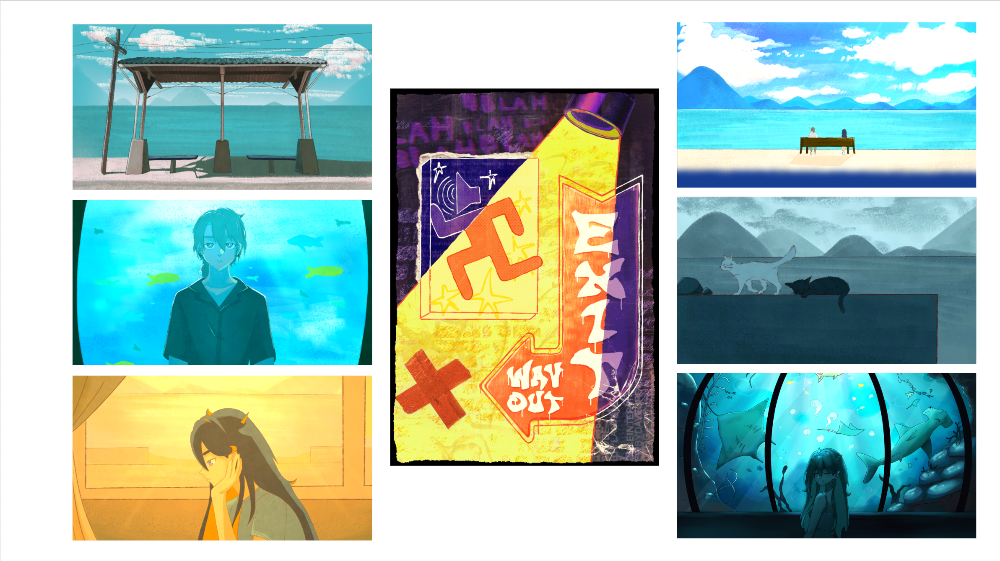
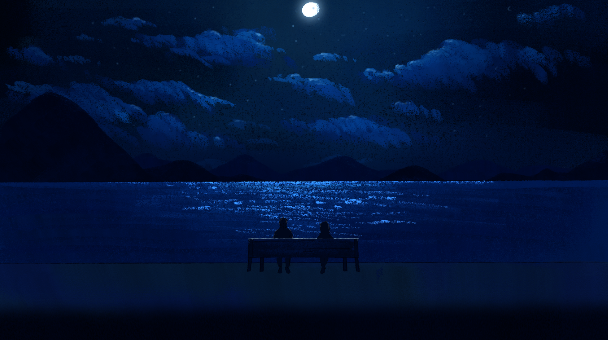

1. Karakter design
Character Design / Model Sheet / Concept Art

Válogatott kreatív, animációs és játékkoncepció munkáim



Platformer játék GDevelopban.


Egy nyári hangulatú rövidfilm látvány- és jelenettervei az animációs képzésem alatt elkészítve.


Egy személyes kedvenc jelenetem a rövidfilmemből.